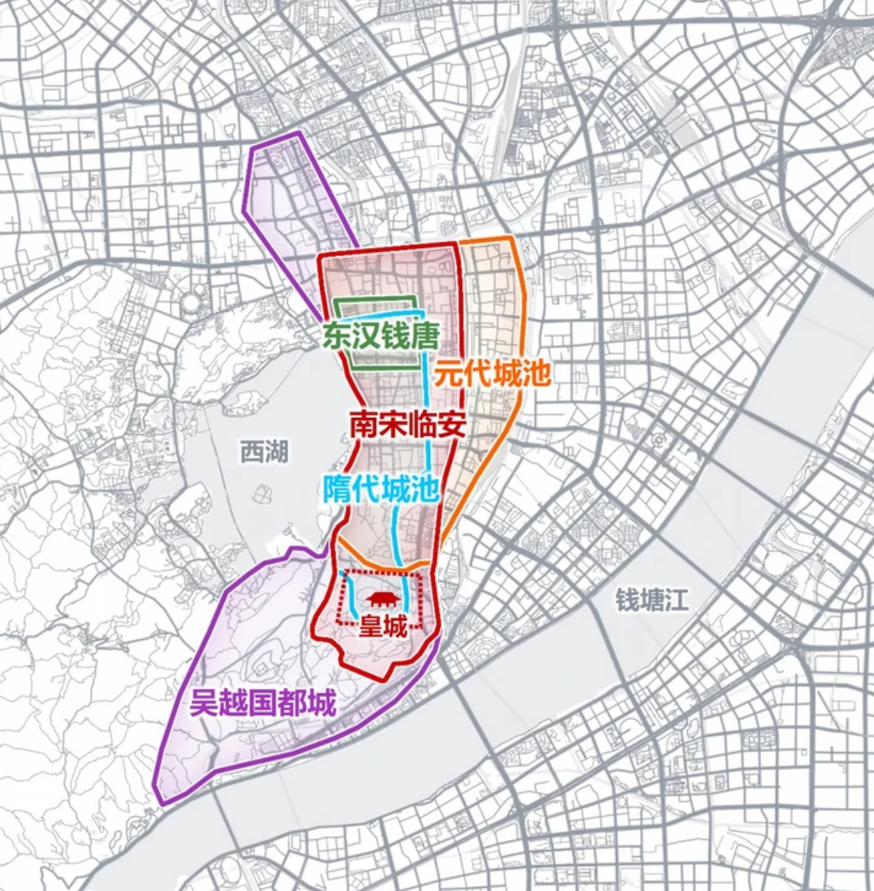

杭州历代城界与城门
核对日期：2026-10-22。图面配准均为研究参考，不是考古测绘原始GIS。古城与皇城轮廓采用虚线和淡填充；未闭合研究线与考古转绘墙段保持开放。
2026-10-23：隋代与吴越墙线补充
新增1985年图2中可辨识的隋代点划墙线（北、东侧及吴山折转）与吴越罗城东侧长虚线；按原图比例尺等比转换，位置采用钱塘门地段近似平移，误差可能达数百米，不用作精确门基位置。隋代采用旧文大城方案，另有凤凰山州城与湖东北县城分立说。罗城线与＋记号海塘区分；两条旧候选仍不启用。南部山地、遮挡处与裁切部分没有可靠完整线，故两项均保持开放、不填充；完整夹城和罗城仍待可靠测图。2025年动画和2026年新闻插图只作背景核对，其示意性过强，未据此配准完整城界。
分期与方法
- 东汉钱塘：按虞家钧1985年图2虚线与＋记号重描39个顶点，保留西侧及南侧转折，不追随清旗营点线及点划宫城线。原六点仿射配准弃用；按原图2公里比例尺等比转换，以钱塘门地段近似平移，图面北向为假定，不剪切拉伸。绝对位置及原图复原学说仍待核，非考古实测城界；未增加东汉国都身份。
- 钱氏夹城、罗城：890年、893年筑城沿革分别说明。早期图中北部、东部候选墙线与海塘难可靠辨识，候选描绘仅留研究审计，不显示到地图，也不闭合完整山地外周。八处文献门址使用约百米级地段参照，不当作门基测量。
- 南宋外城：王子奇考古综述图二的完整闭合复原轮廓，按钱塘门及相关街巷地段近似配准。十三旱门分期表示，钱塘门不重复建点。
- 皇城：整城图中的大内轮廓，通过宫门对应到历年考古成果图；考古图再以万松岭路、凤凰山脚路、宋城路、梵天寺路核对。显示面北、东、南优先沿考古图转绘墙段，图示缺口只在参考面中补接，二十段开放线保持不变；西部仍是文献图自然屏障推定。两次对应都有图示解释误差，不能从少量控制点残差推导范围精度。西部后苑与圣果寺的完整外界仍待核，已有遗迹几何保持原样。
- 考古墙段：按成果图红带转绘20段开放中心线，保留图示断口；并非考古原始墙体测量面。宫墙、临安外城京城墙和德寿宫墙分别表达。
限制
- 完整轮廓指原复原图闭合面，不是全圈考古实测，也不是历次扩城皆适用。
- 皇城大内面未包含全部西部天然后苑遗存；圣果寺原几何不改动，完整皇城后苑外界待核。
- 吴越夹城、罗城候选线与相邻海塘难可靠辨识，暂不接入地图；候选像素和线保存在审计的pendingResearch，不强接南部秦望山地段。
- 东汉范围已重新沿＋记号城垣转绘，按图面方向和比例尺近似落位，无独立考古控制；旧误描及原仿射结果留审计。
- 水门已有五处文献记载，但尚无本轮可可靠配准的门址图，暂不添加猜测点。
- 余杭、艮山等宋外城门位置是原图定位；钱塘门沿用原点，吴越同名门及元末改筑门址分别表达。
可追溯来源
- 虞家钧《杭州沿革和城市发展》，地理研究1985年4卷3期，图2及筑城沿革
- 王子奇《宋代城镇考古的发现与研究（上）》，图二（考古综述转载）
- 《杭州地区宋代历史遗存调查》及皇城历年考古成果图（原杭州文史网文章转载，作者为杭州市文物考古研究所副研究员）
- 杭州市人大：南宋皇城保护、考古四至与66.5万平方米范围说明
- 山中的杭州史：钱唐县治地望与缺少科学发掘报告的问题
- 杭州政协：严官巷御街与和宁门现代地望
- 临安城保护规划报道：宋十三旱门与元末改筑区别
现代街巷参照来自原始 OpenStreetMap 数据，© OpenStreetMap contributors，ODbL。宫城配准采用凤凰山脚路 way/514086541、宋城路 way/514086543、梵天寺路 way/514086544。原图、像素坐标和转换记录留在项目审计中。
上一批杭州城门与考古资料
用户提供的历代城池叠图（2026-10-23）
此图保留为比较参考。原作者、底图版本及坐标系未确认，现代路网试配准未通过全图核对，尚未据此修改地图城界。隋代大城与州县分立说有分歧；吴越夹城与罗城须分别核证；元代城池须区分元末改筑阶段。

校准核对记录
吴越罗城：2026年研究图复核
采用《子城、夹城、罗城——吴越杭城三步曲》所附完整罗城图作独立参考，以宝石山、吴山、凤凰山、玉皇山地望等比近似定位，四点残差72—316米，鼓楼独立参照约140米。这些数值不代表墙界精度。完整示意轮廓替代原1985年东侧开放线显示；原线仍保留审计。子城、夹城不混为同一期实测外界，原有门址不按此移动。用户截图仍为未配准比较图；未确认原出处。图示参考，非实测墙界。